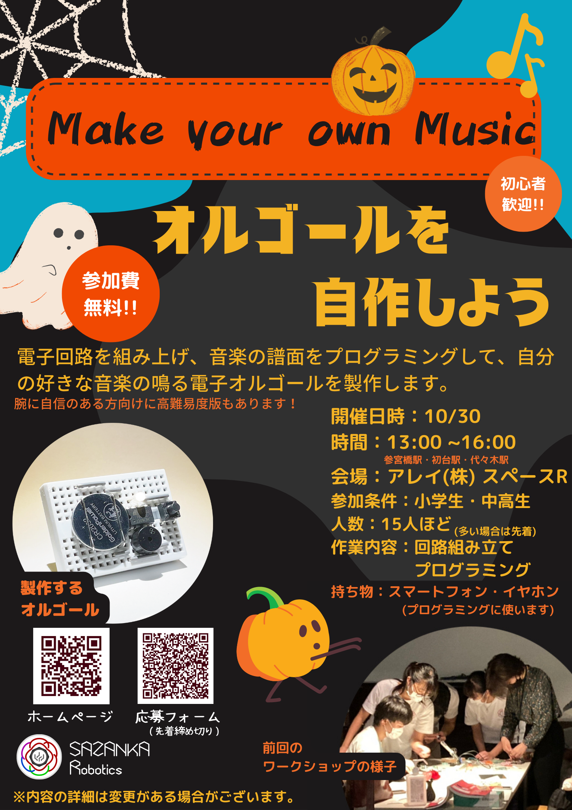

私たちは「STEAM教育を広めたい」「私たちの活動を知ってもらいたい」という思いの下、定期的にワークショップを開催しています！
10月には電子オルゴールを作成するワークショップを行いました。
ありがたいことに、20名の方にお越しいただき、満席の状態で開催することができました。
ワークショップは開催する1か月前を目安にポスターを作成します。
ポスターが出来上がり次第、メンバーの所属している学校に掲示したり、サザンカのSNSに公開します。
10月のワークショップのとき、私は学校の他にも近所の科学館にポスターの掲示を依頼しに行きました。
その科学館はプラネタリウム設備があり、天体観測も行っています。
そのため、私が小学校低学年の頃はその科学館に毎週のように通っていました。
私はポスターの掲示を学校以外の方にお願いするのが初めてだったので、とても緊張していました。
しかし、優しい科学員の方が対応して下さり、「こんな活動をされているんですね！がんばってください！」と言葉をいただき、テンション爆上がりしました！！
勇気を出して、科学館に行ってみて良かったです！！
たくさんの方に支えられて、サザンカがあることを実感した出来事でした。

Written by こゆ